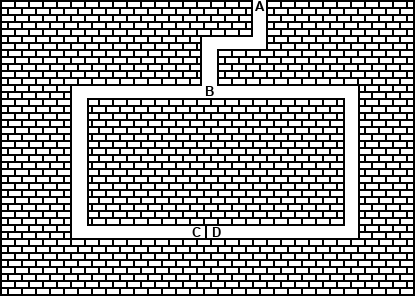

Here’s another story:
Unfortunately, the usual way for Alice to prove something to Bob is for Alice to tell him. But then he knows it, too. Bob can then tell anyone else he wants to and Alice can do nothing about it. (In the literature, different characters are often used in these protocols. Peggy is usually cast as the prover and Victor is the verifier. These names appear in the upcoming examples, instead of Alice and Bob.)
Using one-way functions, Peggy could perform a zero-knowledge proof [626]. This protocol proves to Victor that Peggy does have a piece of information, but it does not give Victor any way to know what the information is.
These proofs take the form of interactive protocols. Victor asks Peggy a series of questions. If Peggy knows the secret, she can answer all the questions correctly. If she does not, she has some chance — 50 percent in the following examples — of answering correctly. After 10 or so questions, Victor will be convinced that Peggy knows the secret. Yet none of the questions or answers gives Victor any information about Peggy’s information — only about her knowledge of it.
Jean-Jacques Quisquater and Louis Guillou explain zero-knowledge with a story about a cave [1281]. The cave, illustrated in Figure 5.1, has a secret. Someone who knows the magic words can open the secret door between C and D. To everyone else, both passages lead to dead ends.

Figure 5.1 The zero-knowledge cave.
Peggy knows the secret of the cave. She wants to prove her knowledge to Victor, but she doesn’t want to reveal the magic words. Here’s how she convinces him:
Assume that Victor has a camcorder and records everything he sees. He records Peggy disappearing into the cave, he records when he shouts out where he wants Peggy to come out from, and he records Peggy coming out. He records all n trials. If he showed this recording to Carol, would she believe that Peggy knew the magic words to open the door? No. What if Peggy and Victor had agreed beforehand what Victor would call out, and Peggy would make sure that she went into that path. Then she could come out where Victor asked her every time, without knowing the magic words. Or maybe they couldn’t do that. Peggy would go into one of the passages and Victor would call out a random request. If Victor guessed right, great; if he didn’t, they would edit that trial out of the camcorder recording. Either way, Victor can get a recording showing exactly the same sequence of events as in a real proof where Peggy knew the magic words.
This shows two things. One, it is impossible for Victor to convince a third party of the proof’s validity. And two, it proves that the protocol is zero-knowledge. In the case where Peggy did not know the magic words, Victor will obviously not learn anything from watching the recording. But since there is no way to distinguish a real recording from a faked recording, Victor cannot learn anything from the real proof — it must be zero knowledge.
The technique used in this protocol is called cut and choose, because of its similarity to the classic protocol for dividing anything fairly:
It is in Alice’s best interest to divide fairly in step (1), because Bob will choose whichever half he wants in step (2). Michael Rabin was the first person to use the cut-and-choose technique in cryptography [1282]. The concepts of interactive protocol and zero-knowledge were formalized later [626,627].
The cut-and-choose protocol works because there is no way Peggy can repeatedly guess which side Victor will ask her to come out of. If Peggy doesn’t know the secret, she can only come out the way she came in. She has a 50 percent chance of guessing which side Victor will ask in each round (sometimes called an accreditation) of the protocol, so she has a 50 percent chance of fooling him. The chance of her fooling him in two rounds is 25 percent, and the chance of her fooling him all n times is 1 in 2n. After 16 rounds, Peggy has a 1 in 65,536 chance of fooling Victor. Victor can safely assume that if all 16 of Peggy’s proofs are valid, then she must know the secret words to open the door between points C and D. (The cave analogy isn’t perfect. Peggy can simply walk in one side and out the other; there’s no need for any cut-and-choose protocol. However, mathematical zero knowledge requires it.)
Assume that Peggy knows some information, and furthermore that the information is the solution to a hard problem. The basic zero-knowledge protocol consists of several rounds.
Remember the camcorder in the cave protocol? You can do the same thing here. Victor can make a transcript of the exchange between him and Peggy. He cannot use this transcript to convince Carol, because he can always collude with Peggy to build a simulator that fakes Peggy’s knowledge. This argument can be used to prove that the proof is zero-knowledge.
The mathematics behind this type of proof is complicated. The problems and the random transformation must be chosen carefully, so that Victor does not get any information about the solution to the original problem, even after many iterations of the protocol. Not all hard problems can be used for zero-knowledge proofs, but a lot of them can.
An example might go a long way to explain this concept; this one comes from graph theory [619,622]. A graph is a network of lines connecting different points. If two graphs are identical except for the names of the points, they are called isomorphic. For an extremely large graph, finding whether two graphs are isomorphic can take centuries of computer time; it’s one of those NP-complete problems discussed in Section 11.1.
Assume that Peggy knows the isomorphism between the two graphs, G1 and G2. The following protocol will convince Victor of Peggy’s knowledge:
If Peggy does not know an isomorphism between G1 and G2, she cannot create graph H which is isomorphic to both. She can create a graph that is either isomorphic to G1 or one that is isomorphic to G2. Like the previous example, she has only a 50 percent chance of guessing which proof Victor will ask her to perform in step (3).
This protocol doesn’t give Victor any useful information to aid him in figuring out an isomorphism between G1 and G2. Because Peggy generates a new graph H for each round of the protocol, he can get no information no matter how many rounds they go through the protocol. He won’t be able to figure out an isomorphism between G1 and G2 from Peggy’s answers.
In each round, Victor receives a new random permutation of H, along with an isomorphism between H and either G1 or G2. Victor could just as well have generated this by himself. Because Victor can create a simulation of the protocol, it can be proven to be zero-knowledge.
A variant of this example was first presented by Manuel Blum [196]. Peggy knows a circular, continuous path along the lines of a graph that passes through each point exactly once. This is called a Hamiltonian cycle. Finding a Hamiltonian cycle is another hard problem. Peggy has this piece of information — she probably got it by creating the graph with a certain Hamiltonian cycle — and this is what she wants to convince Victor that she knows.
Peggy knows the Hamiltonian cycle of a graph, G. Victor knows G, but not the Hamiltonian cycle. Peggy wants to prove to Victor that she knows this Hamiltonian cycle without revealing it. This is how she does it:
If Peggy is honest, she can provide either proof in step (4) to Victor. However, if she does not know a Hamiltonian cycle for G, she cannot create an encrypted graph H´ which can meet both challenges. The best she can do is to create a graph that is either isomorphic to G or one that has the same number of points and lines and a valid Hamiltonian cycle. While she has a 50 percent chance of guessing which proof Victor will ask her to perform in step (3), Victor can repeat the protocol enough times to convince himself that Peggy knows a Hamiltonian cycle for G.
The basic zero-knowledge protocol involves n exchanges between Peggy and Victor. Why not do them all in parallel:
Unfortunately, it’s not that simple. This protocol does not have the same zero-knowledge properties as the previous protocol. In step (4), Victor can choose the challenges as a one-way hash of all the values committed to in the second step, thus making the transcript nonsimulatable. It is still zero-knowledge, but of a different sort. It seems to be secure in practice, but no one knows how to prove it. We do know that in certain circumstances, certain protocols for certain problems can be run in parallel while retaining their zero-knowledge property [247,106,546,616].
Carol can’t be convinced because the protocol is interactive, and she is not involved in the interaction. To convince Carol, and anyone else who may be interested, we need a noninteractive protocol.
Protocols have been invented for noninteractive zero-knowledge proofs [477,198,478,197]. These protocols do not require any interaction; Peggy could publish them and thereby prove to anyone who takes the time to check that the proof is valid.
The basic protocol is similar to the parallel zero-knowledge proof, but a one-way hash function takes the place of Victor:
This is amazing: Peggy can publish some data that contains no information about her secret, but can be used to convince anyone of the secret’s existence. The protocol can also be used for digital signature schemes, if the challenge is set as a one-way hash of both the initial messages and the message to be signed.
This works because the one-way hash function acts as an unbiased random-bit generator. For Peggy to cheat, she has to be able to predict the output of the one-way hash function. (Remember, if she doesn’t know the solution to the hard problem, she can do either (a) or (b) of step (4), but not both.) If she somehow knew what the one-way hash function would ask her to do, then she could cheat. However, there is no way for Peggy to force the one-way function to produce certain bits or to guess which bits it will produce. The one-way function is, in effect, Victor’s surrogate in the protocol — randomly choosing one of two proofs in step (4).
In a noninteractive protocol, there must be many more iterations of the challenge/reply sequence. Peggy, not Victor, picks the hard problems using random numbers. She can pick different problems, hence different commitment vectors, till the hash function produces something she likes. In an interactive protocol, 10 iterations — a probability of 1 in 210 (1 in 1024) that Peggy can cheat — may be fine. However, that’s not enough for noninteractive zero-knowledge proofs. Remember that Mallory can always do either (a) or (b) of step (4). He can try to guess which he will be asked to do, go through steps (1) through (3), and see if he guessed right. If he didn’t, he can try again — repeatedly. Making 1024 guesses is easy on a computer. To prevent this brute-force attack, noninteractive protocols need 64 iterations, or even 128 iterations, to be valid.
This is the whole point of using a one-way hash function: Peggy cannot predict the output of the hash function because she cannot predict its input. The commitments which are used as the input are only known after she solves the new problems.
Blum proved that any mathematical theorem can be converted into a graph such that the proof of that theorem is equivalent to proving a Hamiltonian cycle in the graph. The general case that any NP statement has a zero-knowledge proof, assuming one-way functions and therefore good encryption algorithms, was proved in [620]. Any mathematical proof can be converted into a zero-knowledge proof. Using this technique, a researcher can prove to the world that he knows the proof of a particular theorem without revealing what that solution is. Blum could have published these results without revealing them.
There are also minimum-disclosure proofs [590]. In a minimum-disclosure proof, the following properties hold:
Zero-knowledge proofs have an additional condition:
There is considerable mathematical difference between proofs that are only minimum-disclosure and those that are zero-knowledge. That distinction is beyond the scope of this book, but more sophisticated readers are welcome to peruse the references. The concepts were introduced in [626,619,622]. Further elaboration on their ideas, based on different mathematical assumptions, were developed in [240,319,239].
There are also different kinds of zero-knowledge proofs:
Over the years, extensive work, both theoretical and applied, has been done on minimum-disclosure and zero-knowledge proofs. Mike Burmester and Yvo Desmedt invented broadcast interactive proofs, where one prover can broadcast a zero-knowledge interactive proof to a large group of verifiers [280]. Cryptographers proved that everything that can be proven with an interactive proof can also be proven with a zero-knowledge interactive proof [753,137].
A good survey article on the topic is [548]. For additional mathematical details, variations, protocols, and applications, consult [590, 619, 240, 319, 620, 113, 241, 1528, 660, 238, 591, 617, 510, 592, 214, 104, 216, 832, 97, 939, 622, 482, 615, 618, 215, 476, 71]. A lot has been written on this subject.
In the real world, we often use physical tokens as proofs of identity: passports, driver’s licenses, credit cards, and so on. The token contains something that links it to a person: a picture, usually, or a signature, but it could almost as easily be a thumbprint, a retinal scan, or a dental x-ray. Wouldn’t it be nice to do the same thing digitally?
Using zero-knowledge proofs as proofs of identity was first proposed by Uriel Feige, Amos Fiat, and Adi Shamir [566,567]. Alice’s private key becomes a function of her “identity.” Using a zero-knowledge proof, she proves that she knows her private key and therefore proves her identity. Algorithms for this can be found in Section 23.11.
This idea is quite powerful. It allows a person to prove his identity without any physical token. However, it’s not perfect. Here are some abuses.
Here’s how Alice, who doesn’t even know the rules to chess, can defeat a grandmaster. (This is sometimes called the Chess Grandmaster Problem.) She challenges both Gary Kasparov and Anatoly Karpov to a game, at the same time and place, but in separate rooms. She plays white against Kasparov and black against Karpov. Neither grandmaster knows about the other.
Karpov, as white, makes his first move. Alice records the move and walks into the room with Kasparov. Playing white, she makes the same move against Kasparov. Kasparov makes his first move as black. Alice records the move, walks into the room with Karpov, and makes the same move. This continues, until she wins one game and loses the other, or both games end in a draw.
In reality, Kasparov is playing Karpov and Alice is simply acting as the middleman, mimicking the moves of each grandmaster on the other’s board. However, if neither Karpov nor Kasparov knows about the other’s presence, each will be impressed with Alice’s play.
This kind of fraud can be used against zero-knowledge proofs of identity [485,120]. While Alice is proving her identity to Mallory, Mallory can simultaneously prove to Bob that he is Alice.
When discussing his zero-knowledge identification protocol, Adi Shamir [1424] said: “I could go to a Mafia-owned store a million successive times and they will still not be able to misrepresent themselves as me.”
Here’s how the Mafia can. Alice is eating at Bob’s Diner, a Mafia-owned restaurant. Carol is shopping at Dave’s Emporium, an expensive jewelry store. Bob and Carol are both members of the Mafia and are communicating by a secret radio link. Alice and Dave are unaware of the fraud.
At the end of Alice’s meal, when she is ready to pay and prove her identity to Bob, Bob signals Carol that the fraud is ready to begin. Carol chooses some expensive diamonds and gets ready to prove her identity to Dave. Now, as Alice proves her identity to Bob, Bob radios Carol and Carol performs the same protocol with Dave. When Dave asks a question in the protocol, Carol radios the question back to Bob, and Bob asks it of Alice. When Alice answers, Bob radios the correct answer to Carol. Actually, Alice is just proving her identity to Dave, and Bob and Carol are simply sitting in the middle of the protocol passing messages back and forth. When the protocol finishes, Alice has proved herself to Dave and has purchased some expensive diamonds (which Carol disappears with).
If Alice is willing to collaborate with Carol, they can also defraud Dave. In this protocol, Carol is a well-known terrorist. Alice is helping her enter the country. Dave is the immigration officer. Alice and Carol are connected by a secret radio link.
When Dave asks Carol questions as part of the zero-knowledge protocol, Carol radios them back to Alice, who answers them herself. Carol recites these answers to Dave. In reality, Alice is proving her identity to Dave, with Carol acting as a communications path. When the protocol finishes, Dave thinks that Carol is Alice and lets her into the country. Three days later, Carol shows up at some government building with a minivan full of explosives.
Both the Mafia and Terrorist frauds are possible because the conspirators can communicate via a secret radio. One way to prevent this requires all identifications to take place inside Faraday cages, which block all electromagnetic radiation. In the terrorist example, this assures immigration officer Dave that Carol was not receiving her answers from Alice. In the Mafia example, Bob could simply build a faulty Faraday cage in his restaurant, but jeweler Dave would have a working one; Bob and Carol would not be able to communicate. To solve the Chess Grandmaster Problem, Alice should be forced to sit in her seat until the end of a game.
Thomas Beth and Yvo Desmedt proposed another solution, one using accurate clocks [148]. If each step in the protocol must take place at a given time, no time would be available for the conspirators to communicate. In the Chess Grandmaster Problem, if every move in each game must be made as a clock strikes one minute, then Alice will have no time to run from room to room. In the Mafia story, Bob and Carol will have no time to pass questions and answers to one another.
There are other possible abuses to zero-knowledge proofs of identity, also discussed in [485,120]. In some implementations, there is no check when an individual registers a public key. Hence, Alice can have several private keys and, therefore, several identities. This can be a great help if she wants to commit tax fraud. Alice can also commit a crime and disappear. First, she creates and publishes several identities. One of them she doesn’t use. Then, she uses that identity once and commits a crime so that the person who identifies her is the witness. Then, she immediately stops using that identity. The witness knows the identity of the person who committed the crime, but if Alice never uses that identity again — she’s untraceable.
To prevent this, there has to be some mechanism by which each person has only one identity. In [120] the authors suggest the bizarre idea of tamperproof babies who are impossible to clone and contain a unique number as part of their genetic code. They also suggested having each baby apply for an identity at birth. (Actually, the parents would have to do this as the baby would be otherwise occupied.) This could easily be abused; parents could apply for multiple identities at the child’s birth. In the end, the uniqueness of an individual is based on trust.
Alice wants to travel to Zaire, but that government won’t give her a visa. Carol offers to rent her identity to Alice. (Bob offered first, but there were some obvious problems.) Carol sells Alice her private key and Alice goes off to Zaire pretending to be Carol.
Carol has not only been paid for her identity, but now she has a perfect alibi. She commits a crime while Alice is in Zaire. “Carol” has proved her identity in Zaire; how could she commit a crime back home?
Of course, Alice is free to commit crimes as well. She does so either before she leaves or after she returns, near Carol’s home. First she identifies herself as Carol (she has Carol’s private key, so she can easily do that), then she commits a crime and runs away. The police will come looking for Carol. Carol will claim she rented her identity to Alice, but who would believe such a nonsensical story?
The problem is that Alice isn’t really proving her identity; she is proving that she knows a piece of secret information. It is the link between that information and the person it belongs to that is being abused. The tamperproof baby solution would protect against this type of fraud, as would a police state where all citizens would have to prove their identity very frequently (at the end of each day, at each street corner, etc.). Biometric methods — fingerprints, retinal scanning, voiceprints, and so on — may help solve this problem.
Alice wants to prove to Bob that she is a member of some super-secret organization, but she does not want to reveal her identity. This problem is similar but different to proving identity, and has also been studied [887,906,907,1201,1445]. Some solutions are related to the problem of group signatures (see Section 4.6).
An essential feature of digital signature protocols is that the signer knows what he is signing. This is a good idea, except when we want the reverse.
We might want people to sign documents without ever seeing their contents. There are ways that a signer can almost, but not exactly, know what he is signing. But first things first.
Bob is a notary public. Alice wants him to sign a document, but does not want him to have any idea what he is signing. Bob doesn’t care what the document says; he is just certifying that he notarized it at a certain time. He is willing to go along with this.
This protocol only works if the signature function and multiplication are commutative. If they are not, there are other ways to modify the document other than by multiplying. Some relevant algorithms appear in Section 23.12. For now, assume that the operation is multiplication and all the math works.
Can Bob cheat? Can he collect any information about the document that he is signing? If the blinding factor is truly random and makes the blinded document truly random, he cannot. The blinded document Bob signs in step (2) looks nothing like the document Alice began with. The blinded document with Bob’s signature on it in step (3) looks nothing like the signed document at the end of step (4). Even if Bob got his hands on the document, with his signature, after completing the protocol, he cannot prove (to himself or to anyone else) that he signed it in that particular protocol. He knows that his signature is valid. He can, like anyone else, verify his signature. However, there is no way for him to correlate any information he received during the signing protocol with the signed document. If he signed a million documents using this protocol, he would have no way of knowing in which instance he signed which document.
The properties of completely blind signatures are:
Eve, who is in the middle, watching this protocol, has even less information than Bob.
With the completely blind signature protocol, Alice can have Bob sign anything: “Bob owes Alice a million dollars,” “Bob owes Alice his first-born child,” “Bob owes Alice a bag of chocolates.” The possibilities are endless. This protocol isn’t useful in many applications.
However, there is a way that Bob can know what he is signing, while still maintaining the useful properties of a blind signature. The heart of this protocol is the cut-and-choose technique. Consider this example. Many people enter this country every day, and the Department of Immigration wants to make sure they are not smuggling cocaine. The officials could search everyone, but instead they use a probabilistic solution. They will search one-tenth of the people coming in. One person in ten has his belongings inspected; the other nine get through untouched. Chronic smugglers will get away with their misdeeds most of the time, but they have a 10 percent chance of getting caught. And if the court system is effective, the penalty for getting caught once will more than wipe out the gains from the other nine times.
If the Department of Immigration wants to increase the odds of catching smugglers, they have to search more people. If they want to decrease the odds, they have to search fewer people. By manipulating the probabilities, they control how successful the protocol is in catching smugglers.
The blind signature protocol works in a similar manner. Bob will be given a large pile of different blinded documents. He will open, that is examine, all but one and then sign the last.
Think of the blinded document as being in an envelope. The process of blinding the document is putting the document in an envelope and the process of removing the blinding factor is opening the envelope. When the document is in an envelope, nobody can read it. The document is signed by having a piece of carbon paper in the envelope: When the signer signs the envelope, his signature goes through the carbon paper and signs the document as well.
This scenario involves a group of counterintelligence agents. Their identities are secret; not even the counterintelligence agency knows who they are. The agency’s director wants to give each agent a signed document stating: “The bearer of this signed document, (insert agent’s cover name here), has full diplomatic immunity.” Each of the agents has his own list of cover names, so the agency can’t just hand out signed documents. The agents do not want to send their cover names to the agency; the enemy might have corrupted the agency’s computer. On the other hand, the agency doesn’t want to blindly sign any document an agent gives it. A clever agent might substitute a message like: “Agent (name) has retired and collects a million-dollar-a-year pension. Signed, Mr. President.” In this case, blind signatures could be useful.
Assume that all the agents have 10 possible cover names, which they have chosen themselves and which no one else knows. Also assume that the agents don’t care under which cover name they are going to get diplomatic immunity. Also assume that the agency’s computer is the Agency’s Large Intelligent Computing Engine, or ALICE, and that our particular agent is the Bogota Operations Branch: BOB.
This protocol is secure against BOB cheating. For him to cheat, he would have to predict accurately which document ALICE would not examine. The odds of him doing this are 1 in n — not very good. ALICE knows this and feels confident signing a document that she is not able to examine. With this one document, the protocol is the same as the previous completely blinded signature protocol and maintains all of its properties of anonymity.
There is a trick that makes BOB’s chance of cheating even smaller. In step (4), ALICE randomly chooses n/2 of the documents to challenge, and BOB sends her the appropriate blinding factors in step (5). In step (7), ALICE multiplies together all of the unchallenged documents and signs the mega-document. In step (8), BOB strips off all the blinding factors. ALICE’s signature is acceptable only if it is a valid signature of the product of n/2 identical documents. To cheat BOB has to be able to guess exactly which subset ALICE will challenge; the odds are much smaller than the odds of guessing which one document ALICE won’t challenge.
BOB has another way to cheat. He can generate two different documents, one that ALICE is willing to sign and one that ALICE is not. Then he can find two different blinding factors that transform each document into the same blinded document. That way, if ALICE asks to examine the document, BOB gives her the blinding factor that transforms it into the benign document. If ALICE doesn’t ask to see the document and signs it, he uses the blinding factor that transforms it into the malevolent document. While this is theoretically possible, the mathematics of the particular algorithms involved make the odds of BOB’s being able to find such a pair negligibly small. In fact, it can be made as small as the odds of Bob being able to produce the signature on an arbitrary message himself. This issue is discussed further in Section 23.12.
Chaum has patents for several flavors of blind signatures (see Table 5.1).
| U.S. PATENT # | DATE | TITLE |
|---|---|---|
| 4,759,063 | 7/19/88 | Blind Signature Systems [323] |
| 4,759,064 | 7/19/88 | Blind Unanticipated Signature Systems [324] |
| 4,914,698 | 3/3/90 | One-Show Blind Signature Systems [326] |
| 4,949,380 | 8/14/90 | Returned-Value Blind Signature Systems [328] |
| 4,991,210 | 2/5/91 | Unpredictable Blind Signature Systems [331] |
Alice wants to send a secure message to Bob. She doesn’t want to get his public key from a key server; she doesn’t want to verify some trusted third party’s signature on his public-key certificate; and she doesn’t even want to store Bob’s public key on her own computer. She just wants to send him a secure message.
Identity-based cryptosystems, sometimes called Non-Interactive Key Sharing (NIKS) systems, solve this problem [1422]. Bob’s public key is based on his name and network address (or telephone number, or physical street address, or whatever). With normal public-key cryptography, Alice needs a signed certificate that associates Bob’s public key with his identity. With identity-based cryptography, Bob’s public key is his identity. This is a really cool idea, and about as ideal as you can get for a mail system: If Alice knows Bob’s address, she can send him secure mail. It makes the cryptography about as transparent as possible.
The system is based on Trent issuing private keys to users based on their identity. If Alice’s private key is compromised, she has to change some aspect of her identity to get another one. A serious problem is designing a system in such a way that a collusion of dishonest users cannot forge a key.
A lot of work has been done on the mathematics of these sorts of schemes — most of it in Japan — which turn out to be infuriatingly complicated to make secure. Many of the proposed solutions involve Trent choosing a random number for each user — in my opinion this defeats the real point of the system. Some of the algorithms discussed in Chapters 19 and 20 can be identity-based. For details, algorithms, and cryptanalysis, see [191, 1422, 891, 1022, 1515, 1202, 1196, 908, 692, 674, 1131, 1023, 1516, 1536, 1544, 63, 1210, 314, 313, 1545, 1539, 1543, 933, 1517, 748, 1228]. An algorithm that does not rely on any random numbers is [1035]. The system discussed in [1546,1547,1507] is insecure against a chosen-public-key attack; so is the system proposed as NIKS-TAS [1542,1540,1541,993,375,1538]. Honestly, nothing proposed so far is both practical and secure.
Cryptographer Bob is desperately trying to factor a 500-bit number, n. He knows it’s the product of five 100-bit numbers, but nothing more. (This is a problem. If he can’t recover the key he’ll have to work overtime and he’ll miss his weekly mental poker game with Alice.)
What do you know? Here comes Alice now:
This story, stolen from Joe Kilian [831], introduces the concept of oblivious transfer. Alice transmits a group of messages to Bob. Bob receives some subset of those messages, but Alice has no idea which ones he receives. This doesn’t completely solve the problem, however. After Bob has received a random half of the bits, Alice has to convince him that the bits she sent are part of a factor of n, using a zero-knowledge proof.
In the following protocol, Alice will send Bob one of two messages. Bob will receive one, and Alice will not know which.
Bob now has one of the two messages from Alice and Alice does not know which one he was able to read successfully. Unfortunately, if the protocol stopped here it would be possible for Alice to cheat. Another step is necessary.
At this point, of course, Bob can figure out the second message.
The protocol is secure against an attack by Alice because she has no way of knowing which of the two DES keys is the real one. She encrypts them both, but Bob only successfully recovers one of them — until step (6). It is secure against an attack by Bob because, before step (6), he cannot get Alice’s private keys to determine the DES key that the other message was encrypted in. This may still seem like nothing more than a more complicated way to flip coins over a modem, but it has extensive implications when used in more complicated protocols.
Of course, nothing stops Alice from sending Bob two completely useless messages: “Nyah Nyah” and “You sucker.” This protocol guarantees that Alice sends Bob one of two messages; it does nothing to ensure that Bob wants to receive either of them.
Other oblivious transfer protocols are found in the literature. Some of them are noninteractive, meaning that Alice can publish her two messages and Bob can learn only one of them. He can do this on his own; he doesn’t have to communicate with Alice [105].
No one really cares about being able to do oblivious transfer in practice, but the notion is an important building block for other protocols. Although there are many types of oblivious transfer — I have two secrets and you get one; I have n secrets and you get one; I have one secret which you get with probability 1/2; and so on — they are all equivalent [245,391,395].
Honestly, I can’t think of a good use for these, but there are two kinds [346]:
It’s a neat idea; I’m sure it has a use somewhere.
Alice and Bob want to enter into a contract. They’ve agreed on the wording, but neither wishes to sign unless the other signs as well. Face to face, this is easy: Both sign together. Over a distance, they could use an arbitrator.
This protocol works because Trent prevents either of the parties from cheating. If Bob were to refuse to sign the contract in step (5), Alice could appeal to Trent for a copy of the contract already signed by Bob. If Alice were to refuse to sign in step (4), Bob could do the same. When Trent indicates that he received both contracts in step (3), both Alice and Bob know that the other is bound by the contract. If Trent does not receive both contracts in steps (1) and (2), he tears up the one he received and neither party is bound.
If Alice and Bob were sitting face-to-face, they could sign the contract this way [1244]:
If you ignore the obvious problem with this protocol (Alice has a longer name than Bob), it works just fine. After signing only one letter, Alice knows that no judge will bind her to the terms of the contract. But the letter is an act of good faith, and Bob responds with a similar act of good faith.
After each party has signed several letters, a judge could probably be convinced that both parties had signed the contract. The details are murky, though. Surely they are not bound after only the first letter; just as surely they are bound after they sign their entire names. At what point in the protocol do they become bound? After signing one-half of their names? Two-thirds of their names? Three-quarters?
Since neither Alice nor Bob is certain of the exact point at which she or he is bound, each has at least some fear that she or he is bound throughout the protocol. At no point can Bob say: “You signed four letters and I only signed three. You are bound but I am not.” Bob has no reason not to continue with the protocol. Furthermore, the longer they continue, the greater the probability that a judge will rule that they are bound. Again, there is no reason not to continue with the protocol. After all, they both wanted to sign the contract; they just didn’t want to sign before the other one.
This protocol uses the same sort of uncertainty [138]. Alice and Bob alternate taking baby steps toward signing until both have signed.
In the protocol, Alice and Bob exchange a series of signed messages of the form: “I agree that with probability p, I am bound by this contract.”
The recipient of this message can take it to a judge and, with probability p, the judge will consider the contract to be signed.
As the protocol proceeds, both Alice and Bob agree to be bound to the contract with a greater and greater probability. For example, Alice might define her a as 2 percent and Bob might define his b as 1 percent. (It would be nice if they had chosen larger increments; we will be here for a while.) Alice’s first message might state that she is bound with 2 percent probability. Bob might respond that he is bound with 3 percent probability. Alice’s next message might state that she is bound with 5 percent probability and so on, until both are bound with 100 percent probability.
If both Alice and Bob complete the protocol by the completion date, all is well. Otherwise, either party can take the contract to the judge, along with the other party’s last signed message. The judge then randomly chooses a value between 0 and 1 before seeing the contract. If the value is less than the probability the other party signed, then both parties are bound. If the value is greater than the probability, then both parties are not bound. (The judge then saves the value, in case he has to rule on another matter regarding the same contract.) This is what is meant by being bound to the contract with probability p.
That’s the basic protocol, but it can have more complications. The judge can rule in the absence of one of the parties. The judge’s ruling either binds both or neither party; in no situation is one party bound and the other one not. Furthermore, as long as one party is willing to have a slightly higher probability of being bound than the other (no matter how small), the protocol will terminate.
This cryptographic protocol uses the same baby-step approach [529]. DES is used in the description, although any symmetric algorithm will do.
Why do Alice and Bob have to go through all this work? Let’s assume Alice wants to cheat and see what happens. In steps (4) and (5), Alice could disrupt the protocol by sending Bob nonsense bit strings. Bob would catch this in step (6), when he tried to decrypt whatever half he received. Bob could then stop safely, before Alice could decrypt any of Bob’s message pairs.
If Alice were very clever, she could only disrupt half the protocol. She could send one half of each pair correctly, but send a gibberish string for the other half. Bob has only a 50 percent chance of receiving the correct half, so half the time Alice could cheat. However, this only works if there is one key pair. If there were only two pairs, this sort of deception would succeed 25 percent of the time. That is why n should be large. Alice has to guess correctly the outcome of n oblivious transfer protocols; she has a 1 in 2n chance of doing this. If n = 10, Alice has a 1 in 1024 chance of deceiving Bob.
Alice could also send Bob random bits in step (8). Perhaps Bob won’t know that she is sending him random bits until he receives the whole key and tries to decrypt the message halves. But again, Bob has probability on his side. He has already received half of the keys, and Alice does not know which half. If n is large enough, Alice is sure to send him a nonsense bit to a key he has already received and he will know immediately that she is trying to deceive him.
Maybe Alice will just go along with step (8) until she has enough bits of the keys to mount a brute-force attack and then stop transmitting bits. DES has a 56-bit-long key. If she receives 40 of the 56 bits, she only has to try 216, or 65,536, keys in order to read the message — a task certainly within the realm of a computer’s capabilities. But Bob will have exactly the same number of bits of her keys (or, at worst, one bit less), so he can do the same thing. Alice has no real choice but to continue the protocol.
The basic point is that Alice has to play fairly, because the odds of fooling Bob are just too small. At the end of the protocol, both parties have n signed message pairs, any one of which is sufficient for a valid signature.
There is one way Alice can cheat; she can send Bob identical messages in Step (5). Bob can’t detect this until after the protocol is finished, but he can use a transcript of the protocol to convince a judge of Alice’s duplicity.
There are two weaknesses with protocols of this type [138]. First, it’s a problem if one of the parties has significantly more computing power than the other. If, for example, Alice can mount a brute-force attack faster than Bob can, then she can stop sending bits early in step (8), and figure out Bob’s keys herself. Bob, who cannot do the same in a reasonable amount of time, will not be happy.
Second, it’s a problem if one of the parties stops the protocol early. If Alice abruptly stops the protocol, both face similar computational efforts, but Bob does not have any real legal recourse. If, for example, the contract specifies that she do something in a week, and Alice terminates the protocol at a point when Bob would have to spend a year’s worth of computing power before she is really committed, that’s a problem. The real difficulty here is the lack of a near-term deadline by which the process cleanly terminates with either both or neither party bound.
These problems also apply to the protocols in Sections 5.8 and 5.9.
The same simultaneous oblivious transfer protocol used for contract signing works, with some modifications, for computer certified mail [529]. Suppose Alice wants to send a message to Bob, but she does not want him to read it without signing a receipt. Surly postal workers handle this process in real life, but the same thing can be done with cryptography. Whitfield Diffie first discussed this problem in [490].
At first glance, the simultaneous contract-signing protocol can do this. Alice
simply encrypts her message with a DES key. Her half of the protocol can be
something like: “This is the left half of the DES key: 32f5,” and Bob’s half can
be something like: “This is the left half of my receipt.” Everything else stays
the same.
To see why this won’t work, remember that the protocol hinges on the fact that the oblivious transfer in step (5) keeps both parties honest. Both of them know that they sent the other party a valid half, but neither knows which. They don’t cheat in step (8) because the odds of getting away with it are miniscule. If Alice is sending Bob not a message but half of a DES key, Bob can’t check the validity of the DES key in step (6). Alice can still check the validity of Bob’s receipt, so Bob is still forced to be honest. Alice can freely send Bob some garbage DES key, and he won’t know the difference until she has a valid receipt. Tough luck, Bob.
Getting around this problem requires some adjustment of the protocol:
Steps (5) through (8) for Bob, and steps (9) through (12) for both Alice and Bob, are the same as the contract-signing protocol. The twist is all of Alice’s dummy messages. They give Bob some way of checking the validity of her oblivious transfer in step (10), which forces her to stay honest during steps (11) through (13). And, as with the simultaneous contract-signing protocol, both a left and a right half of one of Alice’s message pairs are required to complete the protocol.
Alice knows secret A; Bob knows secret B. Alice is willing to tell Bob A, if Bob tells her B. Bob is willing to tell Alice B, if Alice tells him A. This protocol, observed in a schoolyard, does not work:
Cryptography can make it fair. The previous two protocols are implementations of this more general protocol, one that lets Alice and Bob exchange secrets simultaneously [529]. Rather than repeat the whole protocol, I’ll sketch the modifications to the certified mail protocol.
Alice performs steps (1) through (4) using A as the message. Bob goes through similar steps using B as his message. Alice and Bob perform the oblivious transfer in step (9), decrypt the halves they can in step (10), and go through the iterations in steps (11) and (12). If they are concerned about Eve, they should encrypt their messages. Finally, both Alice and Bob decrypt the remaining halves of the message pairs and XOR any key pair to get the original message encryption key.
This protocol allows Alice and Bob to exchange secrets simultaneously, but says nothing about the quality of the secrets exchanged. Alice could promise Bob the solution to the Minotaur’s labyrinth, but actually send him a map of Boston’s subway system. Bob will get whatever secret Alice sends him. Other protocols are [1286, 195, 991, 1524, 705, 753, 259, 358, 415].